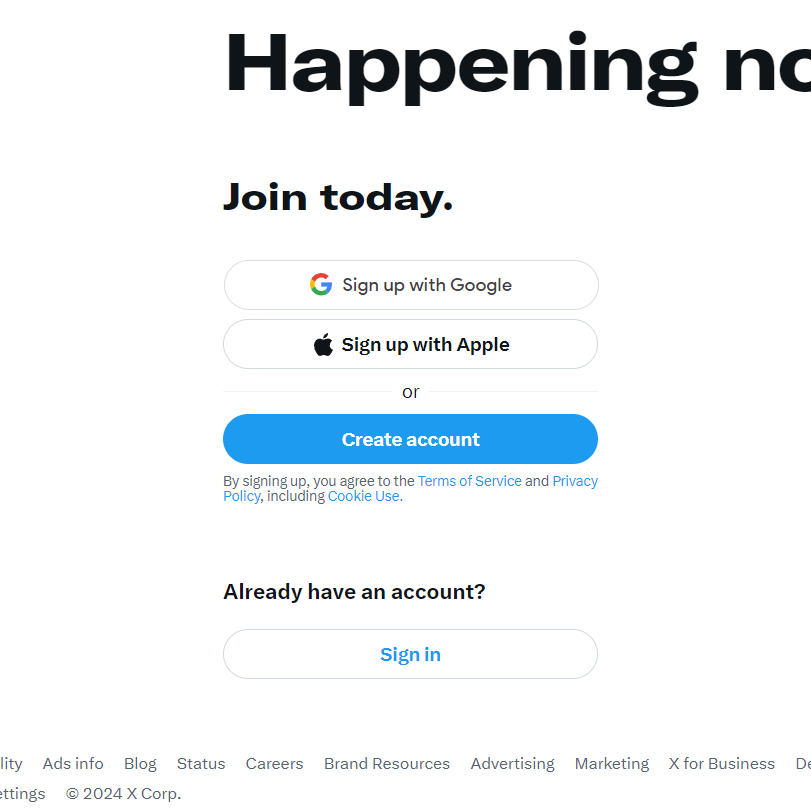
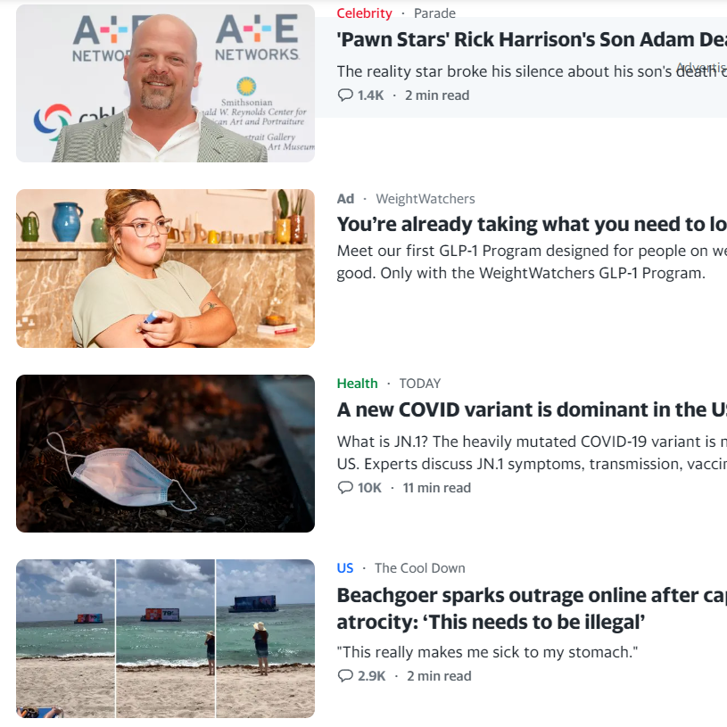
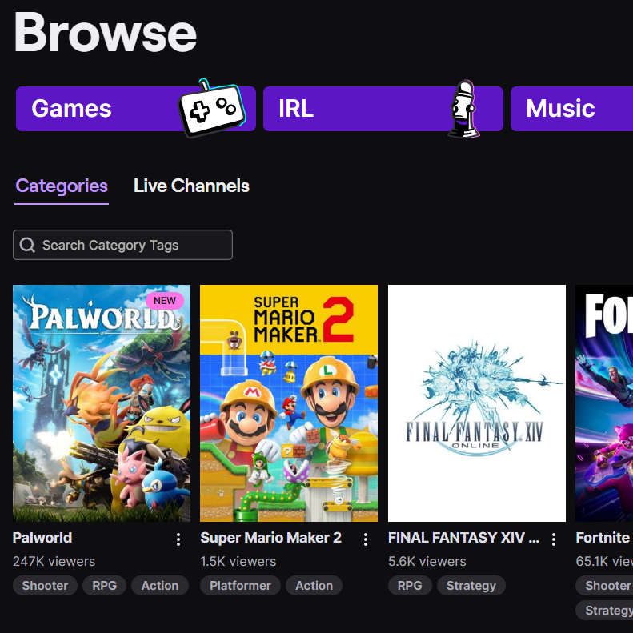

Proximity
Twitter aka X
www.twitter.com Twitter, or X as people call it now, uses proximity on their home page by grouping the buttons to login or sign up together in the body of the page; and the links unrelated to logging in down in the footer.
Alignment
Yahoo
www.yahoo.com Yahoo uses alignment here by having the articles perfectly lined up on the left. In a book I read on design principles, it mentioned to avoid using center alignment and to try to use either left or right, and yahoo does exactly that.
Contrast
Twitch
twitch.tv Twitch uses contrast here because in dark mode, the white text with the black background makes it easier on the eyes when you're say viewing their website in the dark.